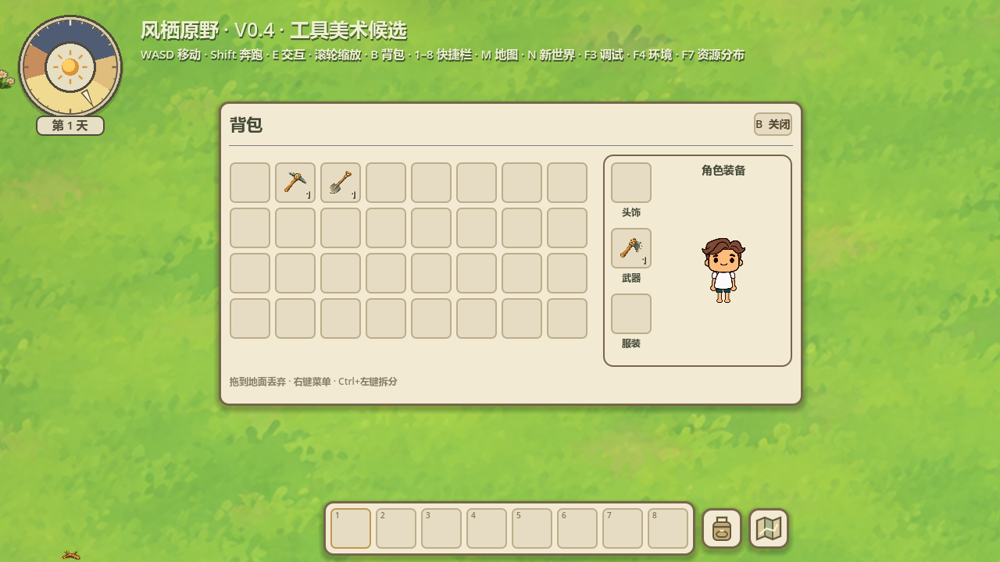
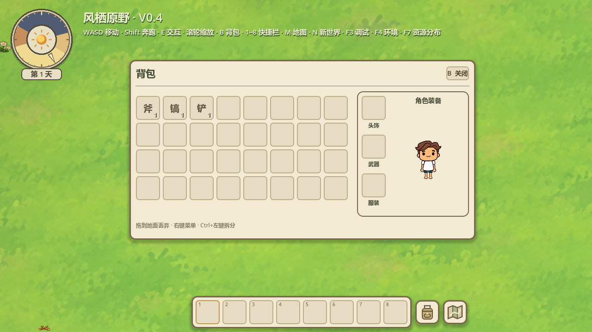
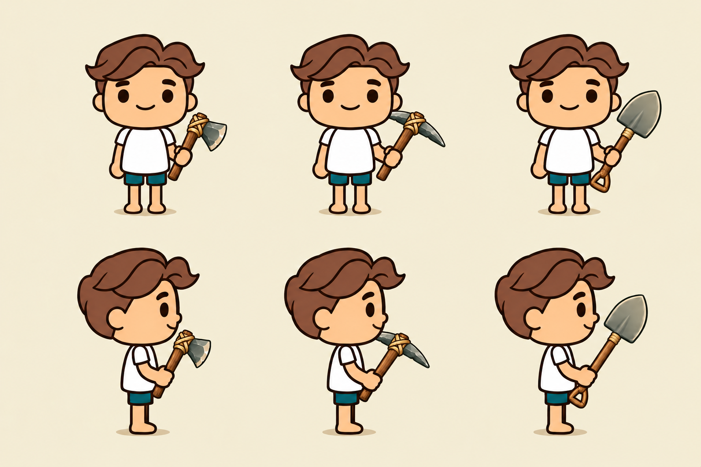
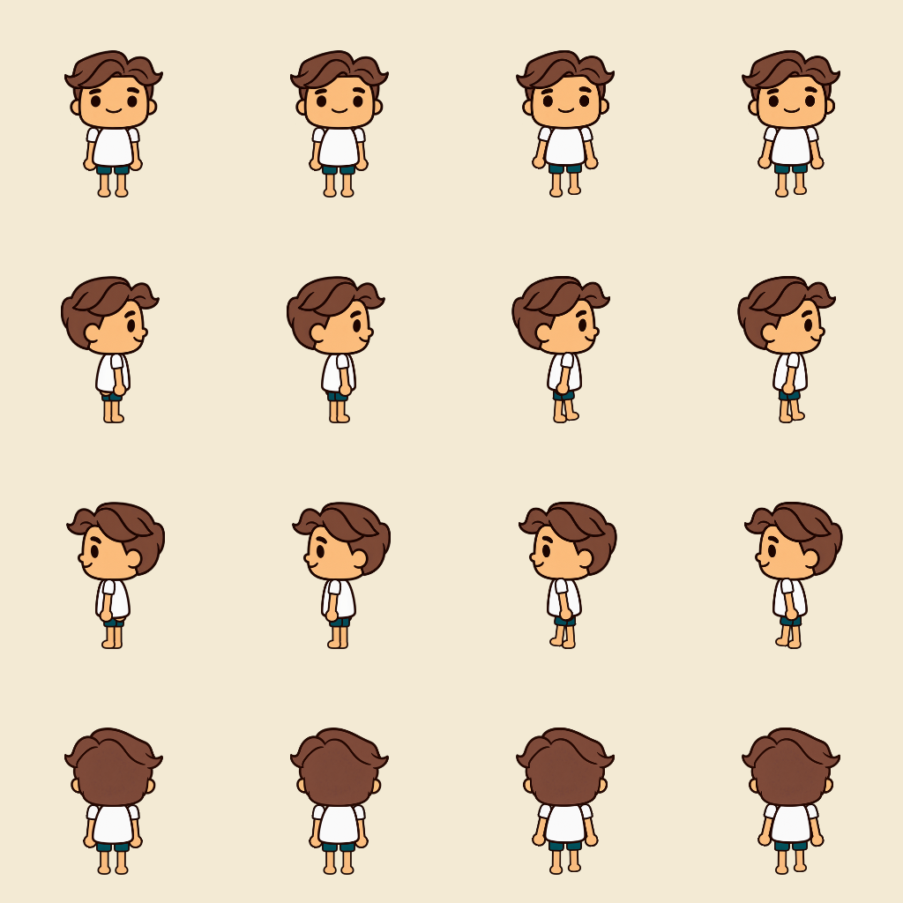

左手层级 · 装备区布局 · 持握预览
2026-10-17 · Godot 4.7.2 Stable · Compatibility / RTX5060
左手层级222项 + 正式布局37项 + 候选入口46项 = 305项通过，0失败。没有无关全量回归或新增FPS/性能压力结论。
左手显示层已放在身体部件最下层，腿部可以遮住左手。保留原动画支点与运动曲线，原生RemoteTransform2D仅改变显示层位置；没有重画人物、修改身体PNG、脚底、碰撞或移动速度，也没有使用全局负Z破坏世界Y排序。
装备区增加独立暖色圆角边框；标题在人像上方居中，头饰/武器/服装名称在各格下方，头饰格顶边与背包首格对齐。悬停卡、拖动交换、右键装备/卸下保持。

候选入口中的实际Godot新布局。角色仍是正式原生角色，手上没有贴入未验收的新图。
正式入口同样使用新布局，原生工具文字占位保持，等待工具画稿确认。
工具拿在手上的静态候选：左起石斧、石镐、简易铲子；上排正面，下排右侧面。正面统一使用与原ArmR/Grip一致的屏幕右侧持握。持握图由generate2dsprite → route_media → Codex (local CLI)生成，仅供评估握法、大小和位置，尚未接入正式角色，更不代表已完成四方向动作。正式行走/呼吸/砍树/拾取素材保持。底层精确图片模型与实际费用未知，三次调用属于生成+定向修正，工具估计0 USD不作为确认免费。

原生渲染对照：每行分别为正面、右侧、左侧、背面；列依次为旧站立、新站立、旧行走、新行走。姿势与图像不变，只调整左手在身体内的遮挡。所有18条动作还核对了3相位与左右镜像。重叠测试用红色臂/蓝色腿临时测试纹理证明绘制顺序：旧版同位置为红色，新版为蓝色。探针只存在测试场景；正式PNG未换色。实际移动时原生驱动无需手工同步，背包预览纹理和翻转保持一致。
验证汇总 · 正式界面37项 · 候选界面46项 · 左手层级222项 · 持握图来源 · 真实生成回执
原工具图QA的safe_frame WARN（value=6，threshold=0）仍保留在reports/tools-v04，对这次完整静态构图不作透明帧/动作QA结论。早期持握图01/02含前持握手方向不统一及铲柄细节问题，原图与回执保留，当前仅03供审阅。
本轮已停止等待用户验收；没有开展其他玩法或正式推广候选角色画稿。